Plots to show New York Air Quality Data
We want to examine the shape of Ozone to see whether the
data is symmetric, skewed or how the mean is centered and where…? Let’s
see how this Ozone data is shaped by using several
different methods.
Import the Data
df = read.csv("Lab3/airquality.csv")
1. Summary of Ozone.
summary(df$Ozone)
## Min. 1st Qu. Median Mean 3rd Qu. Max. NA's
## 1.00 18.00 31.50 42.13 63.25 168.00 37
2. Stacked dot plot of Ozone .
ggplot(data = df, aes(Ozone)) +
geom_dotplot(binwidth = 5) # bins of width 5
## Warning: Removed 37 rows containing missing values
## or values outside the scale range
## (`stat_bindot()`).
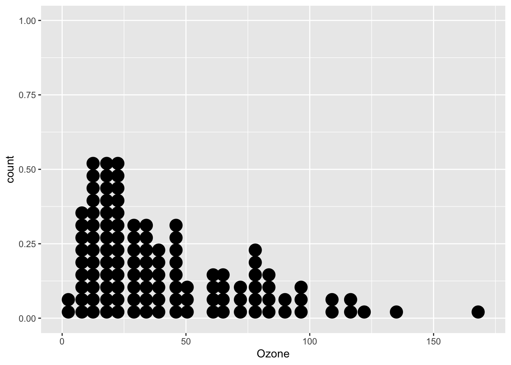
3. Box plot of Ozone.
ggplot(data=df, aes(Ozone)) +
geom_boxplot()
## Warning: Removed 37 rows containing non-finite
## outside the scale range
## (`stat_boxplot()`).
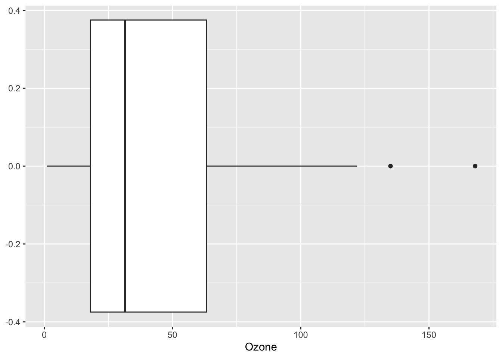
This shows that there are two suspected outliers.
4. Histogram of Ozone .
# ggplot version
ggplot(data=df ) +
geom_histogram(mapping=aes(Ozone), binwidth = 5)
## Warning: Removed 37 rows containing non-finite
## outside the scale range (`stat_bin()`).
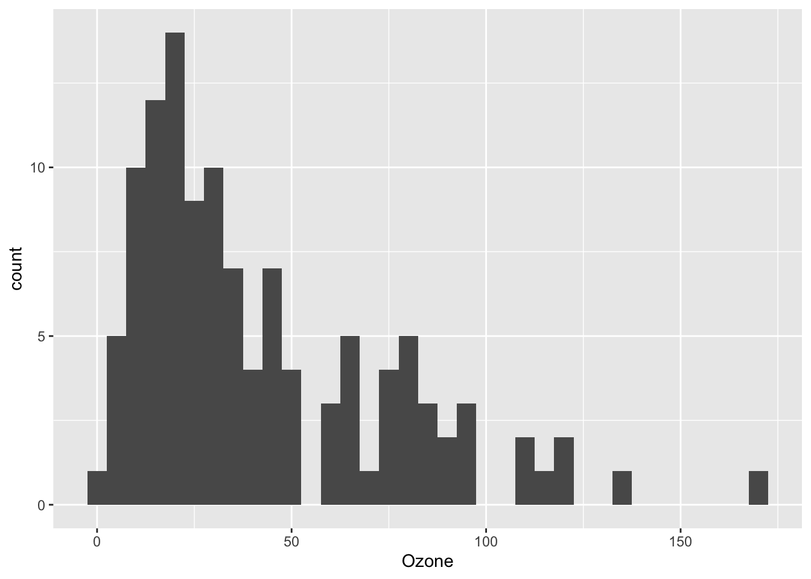
5. Histogram with different bin option
by choosing how many observations in each bin
(e.g. bins=5 means each bin contains 5 observations).
# bins = 5
ggplot(data=df ) + geom_histogram(aes(Ozone), bins = 5)
## Warning: Removed 37 rows containing non-finite
## outside the scale range (`stat_bin()`).
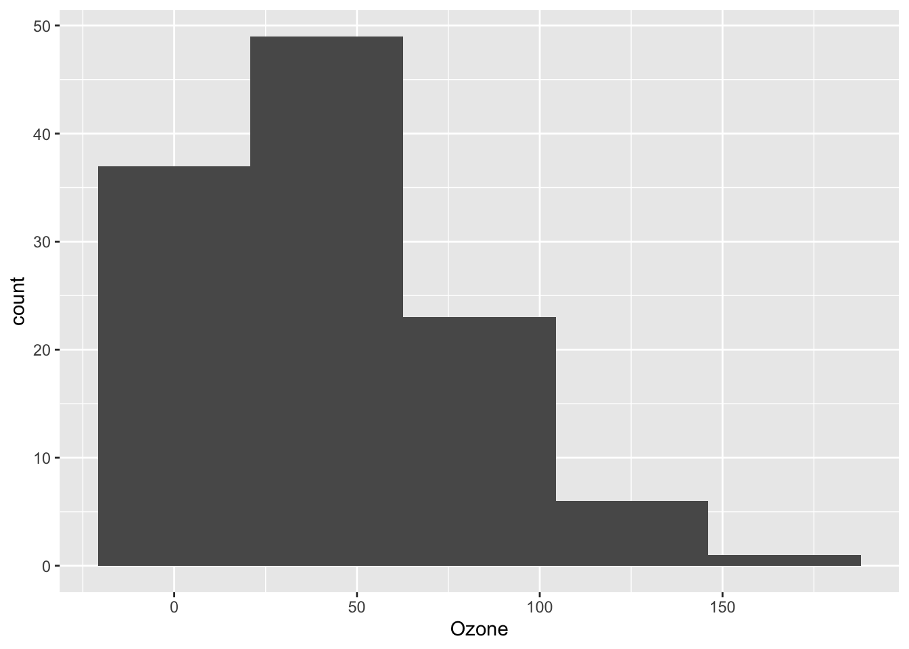
# bins = 30
ggplot(data=df, aes(Ozone)) +
geom_histogram(bins = 30)
## Warning: Removed 37 rows containing non-finite
## outside the scale range (`stat_bin()`).
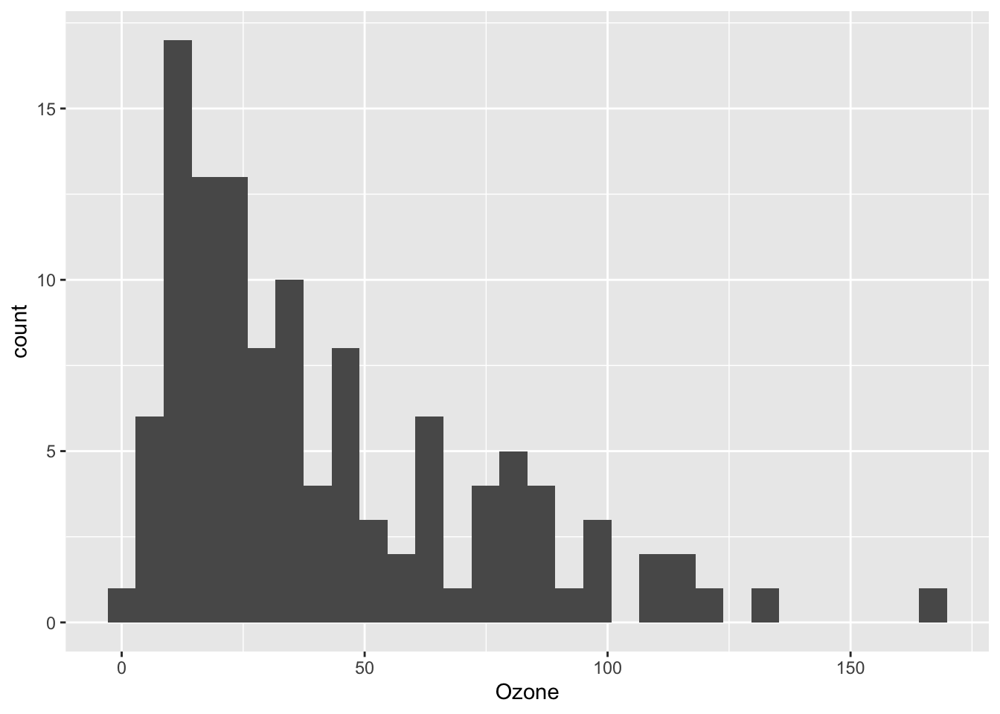
6. Labels in ggplot
With
labs(x='x lable', y='y lable', title = 'name for your plot')
you can name your plot.
ggplot(data=df, aes(Ozone)) +
geom_histogram(bins = 30, color='yellow') +
labs(x='Ozone Level', y='Count', title = 'Histogram with 30 bins')
## Warning: Removed 37 rows containing non-finite
## outside the scale range (`stat_bin()`).
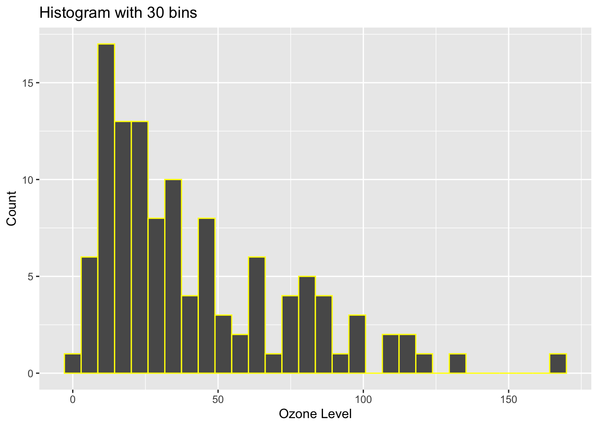
7. Scatter plot of Ozone and Temp .
We want to examine whether there is a relationship between ozone and
temperature (both numerical). How do we want to approach this?
ggplot(df) + geom_point(aes(x=Ozone, y=Temp)) +
labs(title='Scatter plot of Ozone vs Temperature')
## Warning: Removed 37 rows containing missing values
## or values outside the scale range
## (`geom_point()`).
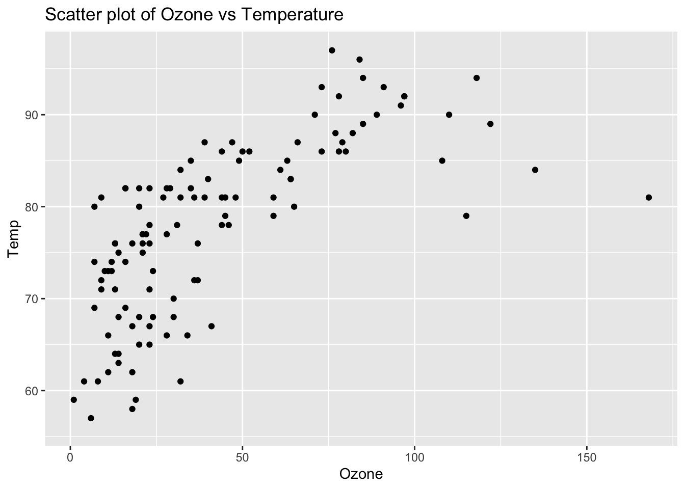
Titanic Data
We are going to work with titanic data titanic.csv.
Let’s import the data.
# loading from csv file
df <- read.csv("Lab3/titanic.csv")
glimpse(df)
## Rows: 2,201
## Columns: 5
## $ X <int> 1, 2, 3, 4, 5, 6, 7, 8, 9, 10, 11, 12, 13, 14, 15, 16, 17, 18…
## $ Class <chr> "3rd", "3rd", "3rd", "3rd", "3rd", "3rd", "3rd", "3rd", "3rd"…
## $ Sex <chr> "Male", "Male", "Male", "Male", "Male", "Male", "Male", "Male…
## $ Age <chr> "Child", "Child", "Child", "Child", "Child", "Child", "Child"…
## $ Survived <chr> "No", "No", "No", "No", "No", "No", "No", "No", "No", "No", "…
8. Barplot for Survived
new_df <- df %>% count(Survived)
ggplot(new_df, aes(x = Survived, y=n)) +
geom_col()
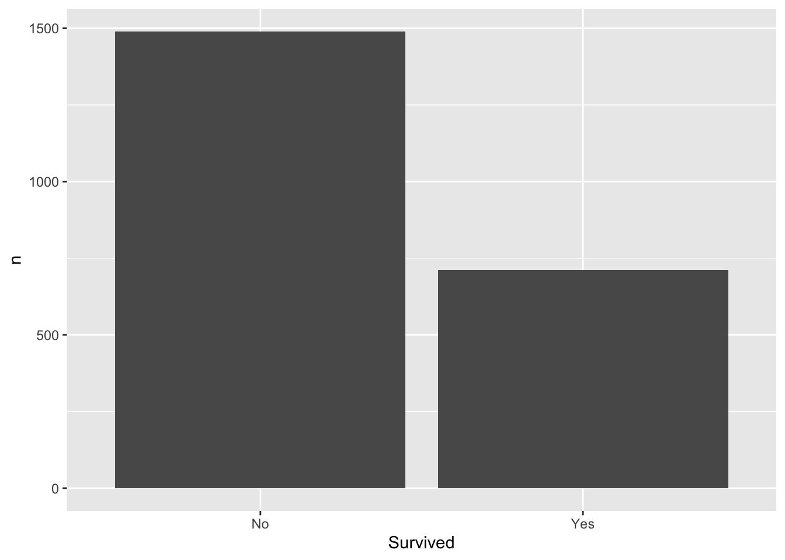
9. Barplot of Survived and Class
This shows summary table of Survived and
Class
df %>%
group_by(Survived, Class) %>%
summarise(count=n())
## `summarise()` has grouped output by
## 'Survived'. You can override using the
## `.groups` argument.
## # A tibble: 8 × 3
## # Groups: Survived [2]
## Survived Class count
## <chr> <chr> <int>
## 1 No 1st 122
## 2 No 2nd 167
## 3 No 3rd 528
## 4 No Crew 673
## 5 Yes 1st 203
## 6 Yes 2nd 118
## 7 Yes 3rd 178
## 8 Yes Crew 212
Adding ggplot() will turn it into barplot using
geom_col()
df %>%
group_by(Survived, Class) %>%
summarise(count=n()) %>%
ggplot(aes(x = factor(Survived), y=count, fill=factor(Class))) +
geom_col(position = "fill") + # position can be changed to "dodge", "stack", "jitter", "fill"
labs(x="Survived")
## `summarise()` has grouped output by
## 'Survived'. You can override using the
## `.groups` argument.
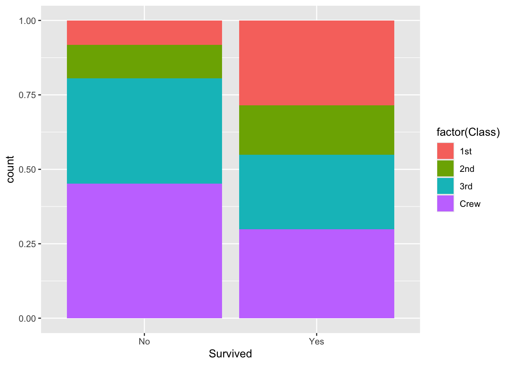
# for positioning in geom functions
# https://ggplot2.tidyverse.org/reference/layer_positions.html
10. Pie chart of Class
We need table class data first in order to show a pie
chart
# dplyr + ggplot
table_data <- df %>%
count(Class) %>%
mutate(Class = factor(Class))
table_data
## Class n
## 1 1st 325
## 2 2nd 285
## 3 3rd 706
## 4 Crew 885
# alternate way using group_by() + summarise()
table_data2 <- df %>%
group_by(Class) %>%
summarise(N = n())
table_data2
## # A tibble: 4 × 2
## Class N
## <chr> <int>
## 1 1st 325
## 2 2nd 285
## 3 3rd 706
## 4 Crew 885
Using this table class object table_data,
we obtain a pie chart.
ggplot(data = table_data, aes(x="", y=n, fill=Class)) +
geom_col() +
geom_text(aes(label = n), position = position_stack(vjust = 0.5)) +
coord_polar(theta="y") +
theme_void()
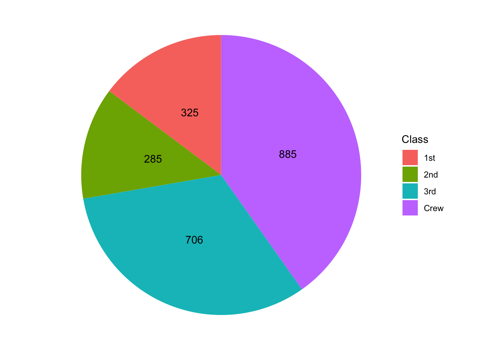
# or simply
ggplot(data = table_data, aes(x="", y=n, fill=Class)) +
geom_col() +
coord_polar(theta="y") +
theme_void()
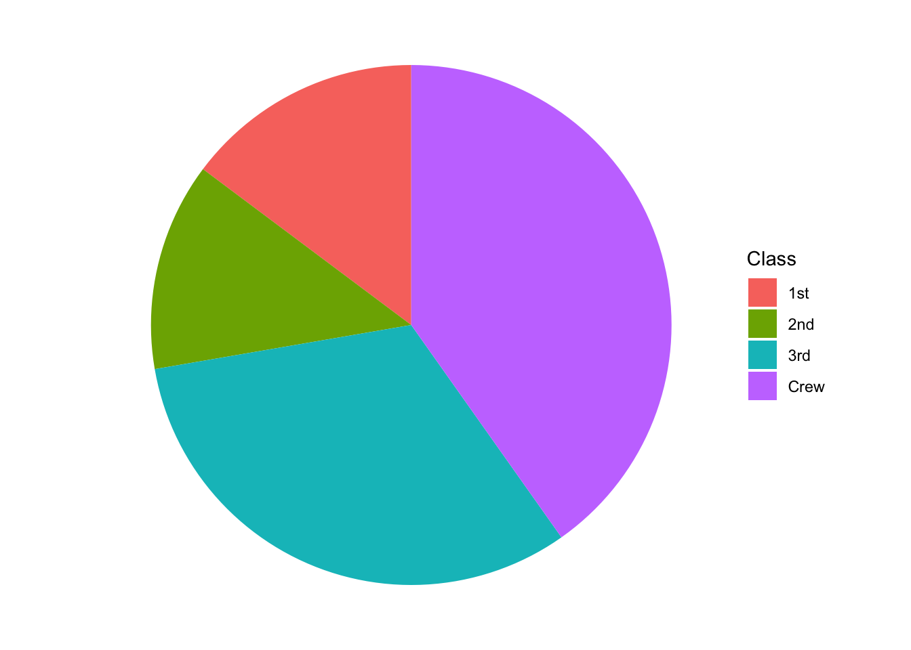
# using table_data2
ggplot(data = table_data2, aes(x="", y=N, fill=Class)) +
geom_col() +
coord_polar(theta="y") +
theme_void()
LS0tCnRpdGxlOiAiTUEyMTMgQmFzaWMgU3RhdGlzdGljcyBhbmQgUHJvYmFiaWxpdHkgLSBMYWIzIEd1aWRlIgpsaW5rLWNpdGF0aW9uczogdHJ1ZQpvdXRwdXQ6CiAgaHRtbF9kb2N1bWVudDoKICAgIGNvZGVfZG93bmxvYWQ6IHRydWUgCiAgcGRmX2RvY3VtZW50OiBkZWZhdWx0Ci0tLQoKYGBge3Igc2V0dXAsIGluY2x1ZGU9RkFMU0V9CmtuaXRyOjpvcHRzX2NodW5rJHNldChlY2hvID0gVFJVRSkKbGlicmFyeShnZ3Bsb3QyKQpsaWJyYXJ5KGRwbHlyKQpgYGAKCiMjICoqTGFiIDM6IFBsb3R0aW5nIGFuZCBTdW1tYXJpZXMqKgoKLS0tLS0tLS0tLS0tLS0tLS0tLS0tLS0tLS0tLS0tLS0tLS0tLS0tLS0tLS0tLS0tLS0tLS0tLS0tLS0tLS0tLS0tLS0tLS0tCgojIyBMZWFybmluZyBPYmplY3RpdmVzCgotICAgQ2xhc3NpZnkgYW5kIEFuYWx5emUgVmFyaWFibGVzOiBDYXRlZ29yaXplIHZhcmlhYmxlcyBiYXNlZCBvbiB0aGVpciB0eXBlcyAoZS5nLiwgbnVtZXJpY2FsL2NhdGVnb3JpY2FsLCBjb250aW51b3VzL2Rpc2NyZXRlLCBvcmRpbmFsKSwgYXNzZXNzIHRoZWlyIGFzc29jaWF0aW9uIChwb3NpdGl2ZSwgbmVnYXRpdmUsIG9yIGluZGVwZW5kZW50KSwgYW5kIGRldGVybWluZSB3aGljaCBtYWtlIHNlbnNlIGFzIGV4cGxhbmF0b3J5IHZzLiByZXNwb25zZSB2YXJpYWJsZXMuCi0gICBVc2UgUiBmb3IgRGF0YSBNYW5hZ2VtZW50IGFuZCBFeHBsb3JhdGlvbjogVXRpbGl6ZSBSIHRvIGxvYWQsIHByZS1wcm9jZXNzLCBhbmQgZXhwbG9yZSBkYXRhIHRocm91Z2ggdmlzdWFsaXphdGlvbiBhbmQgc3VtbWFyaXphdGlvbiB0ZWNobmlxdWVzLgoKLS0tLS0tLS0tLS0tLS0tLS0tLS0tLS0tLS0tLS0tLS0tLS0tLS0tLS0tLS0tLS0tLS0tLS0tLS0tLS0tLS0tLS0tLS0tLS0tCgojIyMgR3JhcGhpY3Mgd2l0aCBgZ2dwbG90MmAgcGFja2FnZQoKUGxvdHRpbmcgd2l0aCBgZ2dwbG90MmAgcGFja2FnZSBiZWdpbnMgd2l0aAoKYGdncGxvdChkYXRhID0gZGYsIGFlcyh4PXhfeHZhcmlhYmxlLCB5PXlfdmFyaWFibGUpKWAKCndoZXJlCgpgZGZgIDogeW91ciBkYXRhZnJhbWUgbmFtZSwKCmBhZXMoKWAgOiBBZXN0aGV0aWNzIHRvIGRlZmluZSAtXD4gc3BlY2lmeWluZyB3aGljaCB2YXJpYWJsZXMgYXJlIG1hcHBlZCB0byB0aGUgeCBhbmQgeSBheGVzLgoKYW5kIHRoZW4geW91IGFkZCBgZ2VvbXNgIGZ1bmN0aW9ucyDigJMgZ2VvbWV0cmljYWwgb2JqZWN0cyBhcyBhIGdyYXBoaWNhbCByZXByZXNlbnRhdGlvbiBvZiB0aGUgZGF0YSBpbiB0aGUgcGxvdCAocG9pbnRzLCBsaW5lcywgYmFycykuICoqYGdncGxvdDJgKiogb2ZmZXJzIG1hbnkgZGlmZmVyZW50IGdlb21zOyBXZSB3aWxsIHVzZSBhIGZldyBjb21tb24gb25lcyB0b2RheSwgaW5jbHVkaW5nOgoKLSAgIGBnZW9tX3BvaW50KClgIDogc2NhdHRlciBwbG90cywgZG90IHBsb3RzLCBldGMuCgotICAgYGdlb21fbGluZSgpYCA6IHRyZW5kIGxpbmVzLCB0aW1lLXNlcmllcywgZXRjLgoKLSAgIGBnZW9tX2hpc3RvZ3JhbSgpYCA6IGhpc3RvZ3JhbXMKCkluIHNob3J0LAoKWyFbZ2dwbG90IGZ1bmN0aW9uIG92ZXJ2aWV3IChcPGh0dHBzOi8vZ2l0aHViLmNvbS9yc3R1ZGlvL2NoZWF0c2hlZXRzL2Jsb2IvbWFpbi9kYXRhLXZpc3VhbGl6YXRpb24ucGRmXD4gKV0oTGFiMy9nZ3Bsb3QuanBnKV0oaHR0cHM6Ly9naXRodWIuY29tL3JzdHVkaW8vY2hlYXRzaGVldHMvYmxvYi9tYWluL2RhdGEtdmlzdWFsaXphdGlvbi5wZGYpCgojIFBsb3RzIHRvIHNob3cgKipOZXcgWW9yayBBaXIgUXVhbGl0eSBEYXRhKioKCldlIHdhbnQgdG8gZXhhbWluZSB0aGUgc2hhcGUgb2YgYE96b25lYCB0byBzZWUgd2hldGhlciB0aGUgZGF0YSBpcyBzeW1tZXRyaWMsIHNrZXdlZCBvciBob3cgdGhlIG1lYW4gaXMgY2VudGVyZWQgYW5kIHdoZXJlLi4uPyBMZXQncyBzZWUgaG93IHRoaXMgYE96b25lYCBkYXRhIGlzIHNoYXBlZCBieSB1c2luZyBzZXZlcmFsIGRpZmZlcmVudCBtZXRob2RzLgoKIyMgSW1wb3J0IHRoZSBEYXRhCgpgYGB7ciwgZWNobz1UUlVFfQpkZiA9IHJlYWQuY3N2KCJMYWIzL2FpcnF1YWxpdHkuY3N2IikKYGBgCgojIyAxLiBTdW1tYXJ5IG9mIGBPem9uZWAuCgpgYGB7ciwgZWNobz1UUlVFfQoKc3VtbWFyeShkZiRPem9uZSkKYGBgCgojIyAyLiBTdGFja2VkIGRvdCBwbG90IG9mIGBPem9uZWAgLgoKYGBge3IsIGVjaG89VFJVRX0KZ2dwbG90KGRhdGEgPSBkZiwgYWVzKE96b25lKSkgKyAKICBnZW9tX2RvdHBsb3QoYmlud2lkdGggPSA1KSAjIGJpbnMgb2Ygd2lkdGggNQoKYGBgCgojIyAzLiBCb3ggcGxvdCBvZiBgT3pvbmVgLgoKYGBge3IsIGVjaG89VFJVRX0KZ2dwbG90KGRhdGE9ZGYsIGFlcyhPem9uZSkpICsKICBnZW9tX2JveHBsb3QoKQoKYGBgCgpUaGlzIHNob3dzIHRoYXQgdGhlcmUgYXJlIHR3byBzdXNwZWN0ZWQgb3V0bGllcnMuCgojIyA0LiBIaXN0b2dyYW0gb2YgYE96b25lYCAuCgpgYGB7ciwgZWNobz1UUlVFfQojIGdncGxvdCB2ZXJzaW9uCgpnZ3Bsb3QoZGF0YT1kZiApICsgCiAgZ2VvbV9oaXN0b2dyYW0obWFwcGluZz1hZXMoT3pvbmUpLCBiaW53aWR0aCA9IDUpIAogIAoKYGBgCgojIyA1LiBIaXN0b2dyYW0gd2l0aCBkaWZmZXJlbnQgYmluIG9wdGlvbgoKYnkgY2hvb3NpbmcgaG93IG1hbnkgb2JzZXJ2YXRpb25zIGluIGVhY2ggYmluIChlLmcuIGBiaW5zPTVgIG1lYW5zIGVhY2ggYmluIGNvbnRhaW5zIDUgb2JzZXJ2YXRpb25zKS4KCmBgYHtyLCBlY2hvPVRSVUV9CgoKIyBiaW5zID0gNQpnZ3Bsb3QoZGF0YT1kZiApICsgZ2VvbV9oaXN0b2dyYW0oYWVzKE96b25lKSwgYmlucyA9IDUpCgojIGJpbnMgPSAzMApnZ3Bsb3QoZGF0YT1kZiwgYWVzKE96b25lKSkgKyAKICBnZW9tX2hpc3RvZ3JhbShiaW5zID0gMzApIAoKCmBgYAoKIyMgNi4gTGFiZWxzIGluIGdncGxvdAoKV2l0aCBgbGFicyh4PSd4IGxhYmxlJywgeT0neSBsYWJsZScsIHRpdGxlID0gJ25hbWUgZm9yIHlvdXIgcGxvdCcpYCB5b3UgY2FuIG5hbWUgeW91ciBwbG90LgoKYGBge3IsIGVjaG89VFJVRX0KCgoKZ2dwbG90KGRhdGE9ZGYsIGFlcyhPem9uZSkpICsgCiAgZ2VvbV9oaXN0b2dyYW0oYmlucyA9IDMwLCBjb2xvcj0neWVsbG93JykgKwogIGxhYnMoeD0nT3pvbmUgTGV2ZWwnLCB5PSdDb3VudCcsIHRpdGxlID0gJ0hpc3RvZ3JhbSB3aXRoIDMwIGJpbnMnKQoKCmBgYAoKIyMgNy4gU2NhdHRlciBwbG90IG9mIGBPem9uZWAgYW5kIGBUZW1wYCAuCgojIyMgV2Ugd2FudCB0byBleGFtaW5lIHdoZXRoZXIgdGhlcmUgaXMgYSByZWxhdGlvbnNoaXAgYmV0d2VlbiBvem9uZSBhbmQgdGVtcGVyYXR1cmUgKGJvdGggbnVtZXJpY2FsKS4gSG93IGRvIHdlIHdhbnQgdG8gYXBwcm9hY2ggdGhpcz8KCmBgYHtyLCBlY2hvPVRSVUV9CgpnZ3Bsb3QoZGYpICsgZ2VvbV9wb2ludChhZXMoeD1Pem9uZSwgeT1UZW1wKSkgKyAKICBsYWJzKHRpdGxlPSdTY2F0dGVyIHBsb3Qgb2YgT3pvbmUgdnMgVGVtcGVyYXR1cmUnKQoKCmBgYAoKIyBUaXRhbmljIERhdGEKCldlIGFyZSBnb2luZyB0byB3b3JrIHdpdGggdGl0YW5pYyBkYXRhIGB0aXRhbmljLmNzdmAuIExldCdzIGltcG9ydCB0aGUgZGF0YS4KCmBgYHtyLCBlY2hvPVRSVUV9CiMgbG9hZGluZyBmcm9tIGNzdiBmaWxlCmRmIDwtIHJlYWQuY3N2KCJMYWIzL3RpdGFuaWMuY3N2IikKZ2xpbXBzZShkZikKCgpgYGAKCiMjIDguIEJhcnBsb3QgZm9yIGBTdXJ2aXZlZGAKCmBgYHtyLCBlY2hvPVRSVUV9CgpuZXdfZGYgPC0gZGYgJT4lIGNvdW50KFN1cnZpdmVkKQpnZ3Bsb3QobmV3X2RmLCBhZXMoeCA9IFN1cnZpdmVkLCB5PW4pKSArCiAgZ2VvbV9jb2woKSAKCgpgYGAKCiMjIDkuIEJhcnBsb3Qgb2YgYFN1cnZpdmVkYCBhbmQgYENsYXNzYAoKVGhpcyBzaG93cyBzdW1tYXJ5IHRhYmxlIG9mIGBTdXJ2aXZlZGAgYW5kIGBDbGFzc2AKCmBgYHtyLCBlY2hvPVRSVUV9CgpkZiAlPiUgCiAgZ3JvdXBfYnkoU3Vydml2ZWQsIENsYXNzKSAlPiUKICBzdW1tYXJpc2UoY291bnQ9bigpKSAKCmBgYAoKQWRkaW5nIGBnZ3Bsb3QoKWAgd2lsbCB0dXJuIGl0IGludG8gYmFycGxvdCB1c2luZyBgZ2VvbV9jb2woKWAKCmBgYHtyLCBlY2hvPVRSVUV9CgpkZiAlPiUgCiAgZ3JvdXBfYnkoU3Vydml2ZWQsIENsYXNzKSAlPiUKICBzdW1tYXJpc2UoY291bnQ9bigpKSAlPiUKICBnZ3Bsb3QoYWVzKHggPSBmYWN0b3IoU3Vydml2ZWQpLCB5PWNvdW50LCBmaWxsPWZhY3RvcihDbGFzcykpKSArCiAgZ2VvbV9jb2wocG9zaXRpb24gPSAiZmlsbCIpICsgICMgcG9zaXRpb24gY2FuIGJlIGNoYW5nZWQgdG8gImRvZGdlIiwgInN0YWNrIiwgImppdHRlciIsICJmaWxsIgogIGxhYnMoeD0iU3Vydml2ZWQiKQoKIyBmb3IgcG9zaXRpb25pbmcgaW4gZ2VvbSBmdW5jdGlvbnMKIyBodHRwczovL2dncGxvdDIudGlkeXZlcnNlLm9yZy9yZWZlcmVuY2UvbGF5ZXJfcG9zaXRpb25zLmh0bWwKCgpgYGAKCiMjIDEwLiBQaWUgY2hhcnQgb2YgYENsYXNzYAoKV2UgbmVlZCBgdGFibGVgIGNsYXNzIGRhdGEgZmlyc3QgaW4gb3JkZXIgdG8gc2hvdyBhIHBpZSBjaGFydAoKYGBge3IsIGVjaG89VFJVRX0KCgojIGRwbHlyICsgZ2dwbG90Cgp0YWJsZV9kYXRhIDwtIGRmICU+JSAKICBjb3VudChDbGFzcykgJT4lCiAgbXV0YXRlKENsYXNzID0gZmFjdG9yKENsYXNzKSkKCnRhYmxlX2RhdGEKCiMgYWx0ZXJuYXRlIHdheSB1c2luZyBncm91cF9ieSgpICsgc3VtbWFyaXNlKCkKCnRhYmxlX2RhdGEyIDwtIGRmICU+JSAKICBncm91cF9ieShDbGFzcykgJT4lCiAgc3VtbWFyaXNlKE4gPSBuKCkpCgp0YWJsZV9kYXRhMgoKCmBgYAoKVXNpbmcgdGhpcyBgdGFibGVgIGNsYXNzIG9iamVjdCBgdGFibGVfZGF0YWAsIHdlIG9idGFpbiBhIHBpZSBjaGFydC4KCmBgYHtyfQpnZ3Bsb3QoZGF0YSA9IHRhYmxlX2RhdGEsIGFlcyh4PSIiLCB5PW4sIGZpbGw9Q2xhc3MpKSArCiAgZ2VvbV9jb2woKSArCiAgZ2VvbV90ZXh0KGFlcyhsYWJlbCA9IG4pLCBwb3NpdGlvbiA9IHBvc2l0aW9uX3N0YWNrKHZqdXN0ID0gMC41KSkgKyAKICBjb29yZF9wb2xhcih0aGV0YT0ieSIpICsKICB0aGVtZV92b2lkKCkKCiMgb3Igc2ltcGx5IApnZ3Bsb3QoZGF0YSA9IHRhYmxlX2RhdGEsIGFlcyh4PSIiLCB5PW4sIGZpbGw9Q2xhc3MpKSArCiAgZ2VvbV9jb2woKSArIAogIGNvb3JkX3BvbGFyKHRoZXRhPSJ5IikgKwogIHRoZW1lX3ZvaWQoKQoKCiMgdXNpbmcgdGFibGVfZGF0YTIKZ2dwbG90KGRhdGEgPSB0YWJsZV9kYXRhMiwgYWVzKHg9IiIsIHk9TiwgZmlsbD1DbGFzcykpICsKICBnZW9tX2NvbCgpICsgCiAgY29vcmRfcG9sYXIodGhldGE9InkiKSArCiAgdGhlbWVfdm9pZCgpCmBgYAo=